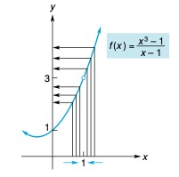
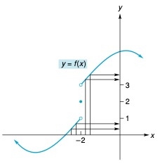

Matemáticas
Auditoría e Ingeniería en Control de Gestión
Contador Público y Auditor

Noción de límites
La noción de estar cada vez más cerca de algo (o aproximarse), pero sin nunca llegar a ese algo, es la que en mátematicas se conoce como concepto de límite.
Este concepto se estudia en el caso de funciones, y lo que ocurre es que una variable se aproxima a un valor particular para luego analizar el efecto que tiene sobre el valor de la función.
Noción de límites
Sea \(\displaystyle f(x)=\frac{x^3-1}{x-1}\) una función real. Note que \[Dom(f) = \mathbb{R}\setminus\{ 1 \}\]
Queremos analizar lo que sucede con los valores de la función \(f(x)\) cuando \(x\) se acerca a \(x=1\), tanto por la izquierda como por la derecha.
Haciendo una tabla de valores, se tiene que:
| Si \(x<1\) | \(x\) | \(f(x)\) |
|---|---|---|
| \(0.8\) | \(2.44\) | |
| \(0.9\) | \(2.71\) | |
| \(0.99\) | \(2.9701\) | |
| \(0.999\) | \(2.997001\) |
| Si \(x>1\) | \(x\) | \(f(x)\) |
|---|---|---|
| \(1.2\) | \(3.64\) | |
| \(1.1\) | \(3.31\) | |
| \(1.01\) | \(3.0301\) | |
| \(1.001\) | \(3.003001\) |
Observamos que cuando \(x\) toma valores muy cerca de \(1\), tanto por el lado izquierdo \((x<1)\) como por el derecho \((x>1)\) los valores de la función \(f(x)\) se acercan cada vez más al número \(3\).
Aproximación

Observando la gráfica de \(f\), nos damos cuenta que aunque la función no está definida en \(x= 1\) (como se indica por un pequeño círculo vacío), los valores de la función se acercan cada vez más a \(3\), conforme \(x\) se acerca más y más a \(1\). Para expresar esto, decimos que el límite de \(f(x)\) cuando \(x\) se aproxima (tiende) a \(1\) es \(3\), es decir: \[\lim_{x\rightarrow 1}\frac{x^3-1}{x-1}=3\]
Noción de límite
La noción de que \(f(x)\) tiende al número \(3\) cuando \(x\) tiende al número \(1\) se puede generalizar intuitivamente para otras funciones y valores como sigue:
Diremos que el límite de \(f\) cuando \(x\) tiende al valor \(a\) es \(L\) si es que los valores de \(f(x)\) son arbitrariamente cercanos a \(L\) a medida que los valores de \(x\) se acercan (por izquierda y por derecha) al valor \(a\) pero nunca iguales a \(a\).
Entonces escribimos \[\lim_{x \rightarrow a}f(x)=L\] y decimos que el límite de \(f(x)\), cuando \(x\) tiende a \(a\), es igual a \(L\).
Notación de límite
-
Denotamos \(\displaystyle \lim_{x \rightarrow a^+}f(x)\) al límite por la derecha de \(f(x)\) cuando \(x\) se tiende a \(a\) por valores que son mayores a \(a\).
-
Denotamos \(\displaystyle \lim_{x \rightarrow a^-}f(x)\) al límite por la izquierda de \(f(x)\) cuando \(x\) tiende a \(a\) por valores que son menores a \(a\).
De este modo, si los límites laterales \(\displaystyle \lim_{x \rightarrow a^-}f(x)\) y\(\displaystyle \lim_{x \rightarrow a^+}f(x)\) tienen un valor común \(L\), se dice entonces que \(\displaystyle \lim_{x \rightarrow a}f(x)\) existe y se escribe \[\lim_{x \rightarrow a}f(x)=L\]
Volviendo al ejemplo \(\displaystyle f(x)=\frac{x^3-1}{x-1}\): \[\lim_{x \rightarrow 1^-}\frac{x^3-1}{x-1}=3 \qquad \qquad \mbox{y} \qquad \qquad \lim_{x \rightarrow 1^+}\frac{x^3-1}{x-1}=3\]
como los límites laterales son iguales, entonces \(\displaystyle \lim_{x \rightarrow 1}\frac{x^3-1}{x-1}\) existe y su valor es \(3\).
Ejemplo:
Determinar si el siguiente límite \(\displaystyle \lim_{x \rightarrow -2} f(x)\), existe, donde \(f\) está dada por la siguiente gráfica.

Analicemos los limites laterales:
-
\(\displaystyle \lim_{x \rightarrow -2^-}f(x)=1\), cuando nos acercamos por la izquierda al \(-2\) los valores de \(f\) se aproximan al \(1\).
-
\(\displaystyle \lim_{x \rightarrow -2^+}f(x)=3\), cuando nos acercamos por la derecha al \(-2\) los valores de \(f\) se aproximan al \(3\).
como los límites laterales son distintos, entonces el \(\displaystyle \lim_{x \rightarrow -2}f(x)\) no existe.
Propiedades de los límites:
-
Si \(c\) es una constante, entonces \(\displaystyle \lim_{x \rightarrow a}c=c\).
-
\(\displaystyle \lim_{x \rightarrow a}x^n=a^n\), para cualquier entero positivo \(n\).
-
\(\displaystyle \lim_{x \rightarrow 2} 4=\)
-
\(\displaystyle \lim_{x \rightarrow -5} 2=\)
-
\(\displaystyle \lim_{x \rightarrow -3} x^2=\)
-
\(\displaystyle \lim_{x \rightarrow 2} x^3=\)
Propiedades de los límites:
Si \(\displaystyle \lim_{x \rightarrow a}f(x)\) y \(\displaystyle \lim_{x \rightarrow a}g(x)\) existen, entonces
-
\(\displaystyle \lim_{x \rightarrow a}[f(x)\pm g(x)] =\lim_{x \rightarrow a}f(x)\pm \lim_{x \rightarrow a} g(x)\)
-
\(\displaystyle \lim_{x \rightarrow a}[f(x)\cdot g(x)] =\lim_{x \rightarrow a}f(x)\cdot \lim_{x \rightarrow a} g(x)\)
-
\(\displaystyle \lim_{x \rightarrow a}[c\cdot f(x)] =c\cdot \lim_{x \rightarrow a}f(x)\), donde \(c\) es una constante.
-
\(\displaystyle \lim_{x \rightarrow 2}(x^3-x) =\)
-
\(\displaystyle \lim_{x \rightarrow -1}((x+1)(x-3)) =\)
-
\(\displaystyle \lim_{x \rightarrow 4}(2x^3-4x^2+5x+7) =\)
Mas Ejemplos
Si \(f\) es una función polinomial, entonces \[\displaystyle \lim_{x \rightarrow a}f(x)=f(a)\]
La función de ingreso para cierto producto \(\displaystyle R(x)=500x-6x^2\). Determinar \(\displaystyle \lim_{x \rightarrow 8}R(x)\).
Propiedades de los límites:
Si \(\displaystyle \lim_{x \rightarrow a}f(x)\) y \(\displaystyle \lim_{x \rightarrow a}g(x)\) existen, entonces
-
\(\displaystyle \lim_{x \rightarrow a} \dfrac{f(x)}{g(x)} = \dfrac{\displaystyle \lim_{x \rightarrow a}f(x)}{\displaystyle \lim_{x \rightarrow a}g(x)}\), si \(\displaystyle \lim_{x \rightarrow a}g(x) \neq 0\).
-
\(\displaystyle \lim_{x \rightarrow a}\sqrt[n]{f(x)} = \sqrt[n]{ \displaystyle \lim_{x \rightarrow a}f(x)}\), si \(\sqrt[n]{ \displaystyle \lim_{x \rightarrow a}f(x)}\) está bien definido.
-
\(\displaystyle \lim_{x \rightarrow 1}\dfrac{x^2-x+1}{x-3}=\)
-
\(\displaystyle \lim_{x \rightarrow 3}\sqrt[3]{x^2+18}=\)
Manipulación algebraica de los límites:
Resolver el siguiente limite \(\displaystyle \lim_{x \rightarrow -1} \dfrac{x^2-1}{x+1}\), si es que existe.
Cuando \(x \rightarrow -1\), tanto el numerador como el denominador tienden a \(0\). Por tanto no podemos utilizar las propiedades anteriores. Sin embargo, no nos interesa lo que suceda con la función cuando \(x=-1\), así podemos suponer que \(x\neq -1\) y simplificar la función: \[\frac{x^2-1}{x+1}=\frac{ (x+1) (x-1)}{x+1}=\frac{ \cancel{(x+1)} (x-1)}{\cancel{x+1}}=x-1\]
Por tanto, calcular el limite en la función original es igual a calcular el límite en la función simplificada:
\[\lim_{x \rightarrow -1} \dfrac{x^2-1}{x+1}=\lim_{x \rightarrow -1} (x-1)=-2\]
Observar que, apesar de que la función original no está definida en \(x=-1\), existe un límite cuando \(x\rightarrow -1\).
Ejercicios
Determinar los siguientes límites, si es que existen.
-
\(\displaystyle \lim_{x \rightarrow 2} 81\)
-
\(\displaystyle \lim_{x \rightarrow 1/2} 8x^2\)
-
\(\displaystyle \lim_{x \rightarrow 3} \dfrac{x-3}{x^2-9}\)
-
\(\displaystyle \lim_{x \rightarrow 1} \dfrac{x^3-1}{x-1}\)
-
\(\displaystyle \lim_{x \rightarrow 0} \dfrac{(x+2)^2-4}{x}\)
-
\(\displaystyle \lim_{x \rightarrow 0} \dfrac{\sqrt{1+x}-1}{x}\)
-
\(\displaystyle \lim_{x \rightarrow -4} \dfrac{x^2+2x-8}{x^2+5x+4}\)
-
\(\displaystyle \lim_{x \rightarrow 6} \dfrac{\sqrt{x-2}-2}{x-6}\)
-
Encuentre la constante \(c\) de modo que \(\displaystyle \lim_{x \rightarrow 3} \dfrac{x^2+x+c}{x^2-5x+6}\) exista.